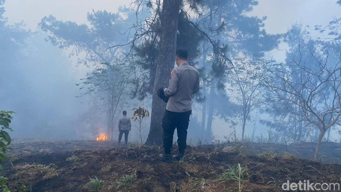

Petugas memadamkan kebakaran Gunung Merbabu di wilayah Semarang, Jumat (27/10/2023). Foto: Dok. Polres Semarang
Semarang - Kawasan Taman Nasional Gunung Merbabu (TNGM) yang masuk di wilayah Getasan, Kabupaten Semarang terbakar. Hingga kini upaya pemadaman masih dilakukan.
Dari keterangan yang diberikan Polres Semarang, kebakaran terjadi sejak pukul 10.00 WIB. Mendapatkan laporan tersebut, Kapolsek Getasan dan anggotanya dibantu personel Koramil Getasan mendatangi lokasi yang masuk di Dusun Sokowolu.
"Benar bahwa Polsek Getasan mendapat laporan dari relawan Taman Nasional Gunung Merbabu, bahwa terjadi kebakaran hutan TNGM yang masuk wilayah Dusun Sokowolu Desa Tajuk Kecamatan Getasan," kata Kapolsek Getasan Iptu Ari Parwanto dalam keterangannya, Jumat (27/10/2023).
Anggota polisi, TNI, dan warga berupaya memadamkan api dengan alat seadanya. Penyisiran juga dilakukan sejauh 5 kilometer ke arah Dusun Ngaduman.
"Kami bersama jajaran TNI dari Koramil Getasan, relawan dan warga sekitar melakukan penyisiran sejauh kurang lebih 5 km dari jalan arah Dusun Ngaduman. Kami gunakan alat seadanya untuk memadamkan api," tegasnya.
Dalam laporan terakhir pukul 17.00 WIB, sebagian besar kebakaran sudah padam. Namun personel masih siaga di Dusun Gedong maupun Dusun Sokowolu, Desa Tajuk, Kecamatan Getasan.
"Lahan yang terbakar merupakan hutan pinus, bukan lahan produktif milik warga. Dan jarak titik api masih jauh dengan pemukiman warga, namun tim gabungan dari Polsek dan Koramil Getasan dibantu petugas TNGM, Relawan dan warga sekitar, masih berjaga jaga di dua Dusun yaitu Gedong dan Sokowolu. Adapun luas lahan yang terbakar kami belum bisa memastikan dan akan berkoordinasi dengan petugas Taman Nasional Gunung Merbabu," jelas Ari.
Belum diketahui pasti penyebab kebakaran, namun Kapolres Semarang, AKBP Achmad Oka Mahendra menegaskan personel dari Polres siap dikerahkan untuk membantu pemadaman api di lereng gunung Merbabu.
"Saat ini Tim gabungan Polsek Getasan, Koramil Getasan, petugas TNGM, Relawan, BPBD dan warga terus berusaha melakukan pemadaman dan pemantauan. Dan apabila skala meningkat, Personel dari Polres Semarang akan diterjunkan untuk membantu tim gabungan di lokasi kebakaran," tegas Oka.
Diberitakan sebelumnya, kebakaran melanda hutan Gunung Merbabu, Jawa Tengah, hari ini. Petugas bekerja keras untuk melokalisir dan memadamkan api.
"Iya, ada dua titik api di wilayah Gedong dan Teamo," kata Pelaksana Tugas (Plt) Kepala Balai Taman Nasional Gunung Merbabu (BTNGMb), Nurpana Sulaksono, saat dihubungi detikJateng melalui telepon selulernya, Jumat (27/10).
Dua titik api kebakaran hutan Gunung Merbabu terjadi di wilayah Desa Tajuk, Kecamatan Getasan, Kabupaten Semarang.
Penulis : Angling Adhitya Purbaya - detikJateng